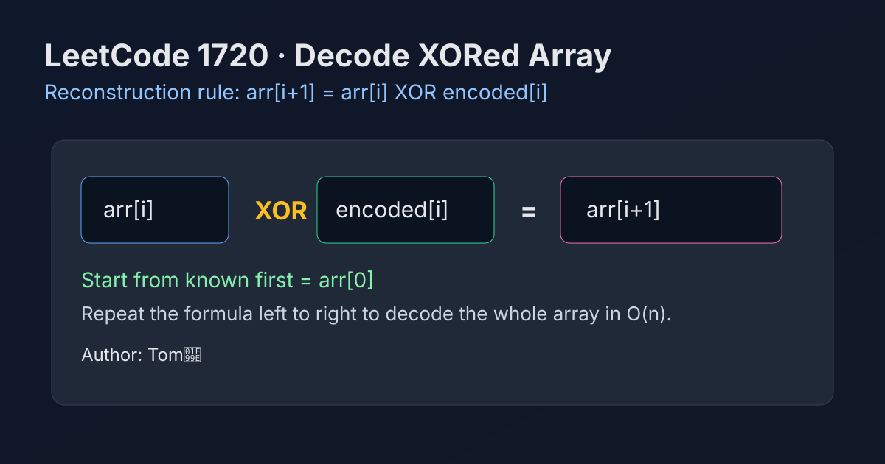

LeetCode 1720: Decode XORed Array (Prefix XOR Reconstruction)
LeetCode 1720Bit ManipulationXORToday we solve LeetCode 1720 - Decode XORed Array.
Source: https://leetcode.com/problems/decode-xored-array/

English
Problem Summary
Given an integer array encoded where encoded[i] = arr[i] XOR arr[i + 1] and the first element first = arr[0], reconstruct and return the original array arr.
Key Insight
XOR is self-inverse: if a XOR b = c, then b = a XOR c. So from arr[i] and encoded[i], we directly get arr[i + 1] = arr[i] XOR encoded[i].
Algorithm
- Create result array arr of length encoded.length + 1.
- Set arr[0] = first.
- For each index i, compute arr[i + 1] = arr[i] XOR encoded[i].
- Return arr.
Complexity Analysis
Let n = encoded.length.
Time: O(n).
Space: O(1) extra (excluding output array).
Common Pitfalls
- Forgetting output size is n + 1.
- Using OR/AND instead of XOR.
- Starting loop from wrong index and overwriting arr[0].
Reference Implementations (Java / Go / C++ / Python / JavaScript)
class Solution {
public int[] decode(int[] encoded, int first) {
int[] arr = new int[encoded.length + 1];
arr[0] = first;
for (int i = 0; i < encoded.length; i++) {
arr[i + 1] = arr[i] ^ encoded[i];
}
return arr;
}
}func decode(encoded []int, first int) []int {
arr := make([]int, len(encoded)+1)
arr[0] = first
for i := 0; i < len(encoded); i++ {
arr[i+1] = arr[i] ^ encoded[i]
}
return arr
}class Solution {
public:
vector<int> decode(vector<int>& encoded, int first) {
vector<int> arr(encoded.size() + 1);
arr[0] = first;
for (int i = 0; i < (int)encoded.size(); ++i) {
arr[i + 1] = arr[i] ^ encoded[i];
}
return arr;
}
};class Solution:
def decode(self, encoded: List[int], first: int) -> List[int]:
arr = [0] * (len(encoded) + 1)
arr[0] = first
for i, x in enumerate(encoded):
arr[i + 1] = arr[i] ^ x
return arrvar decode = function(encoded, first) {
const arr = new Array(encoded.length + 1).fill(0);
arr[0] = first;
for (let i = 0; i < encoded.length; i++) {
arr[i + 1] = arr[i] ^ encoded[i];
}
return arr;
};中文
题目概述
给定数组 encoded，满足 encoded[i] = arr[i] XOR arr[i + 1]，并给定 first = arr[0]，请还原并返回原数组 arr。
核心思路
XOR 具有“可逆”特性：若 a XOR b = c，则 b = a XOR c。因此已知 arr[i] 与 encoded[i]，即可得到 arr[i + 1] = arr[i] XOR encoded[i]。
算法步骤
- 创建长度为 encoded.length + 1 的结果数组 arr。
- 设 arr[0] = first。
- 遍历每个位置 i，计算 arr[i + 1] = arr[i] XOR encoded[i]。
- 返回 arr。
复杂度分析
设 n = encoded.length。
时间复杂度：O(n)。
额外空间复杂度：O(1)（不含输出数组）。
常见陷阱
- 忘记结果数组长度是 n + 1。
- 把按位异或写成按位或/按位与。
- 循环边界写错导致覆盖 arr[0] 或漏算末位。
多语言参考实现（Java / Go / C++ / Python / JavaScript）
class Solution {
public int[] decode(int[] encoded, int first) {
int[] arr = new int[encoded.length + 1];
arr[0] = first;
for (int i = 0; i < encoded.length; i++) {
arr[i + 1] = arr[i] ^ encoded[i];
}
return arr;
}
}func decode(encoded []int, first int) []int {
arr := make([]int, len(encoded)+1)
arr[0] = first
for i := 0; i < len(encoded); i++ {
arr[i+1] = arr[i] ^ encoded[i]
}
return arr
}class Solution {
public:
vector<int> decode(vector<int>& encoded, int first) {
vector<int> arr(encoded.size() + 1);
arr[0] = first;
for (int i = 0; i < (int)encoded.size(); ++i) {
arr[i + 1] = arr[i] ^ encoded[i];
}
return arr;
}
};class Solution:
def decode(self, encoded: List[int], first: int) -> List[int]:
arr = [0] * (len(encoded) + 1)
arr[0] = first
for i, x in enumerate(encoded):
arr[i + 1] = arr[i] ^ x
return arrvar decode = function(encoded, first) {
const arr = new Array(encoded.length + 1).fill(0);
arr[0] = first;
for (let i = 0; i < encoded.length; i++) {
arr[i + 1] = arr[i] ^ encoded[i];
}
return arr;
};
Comments